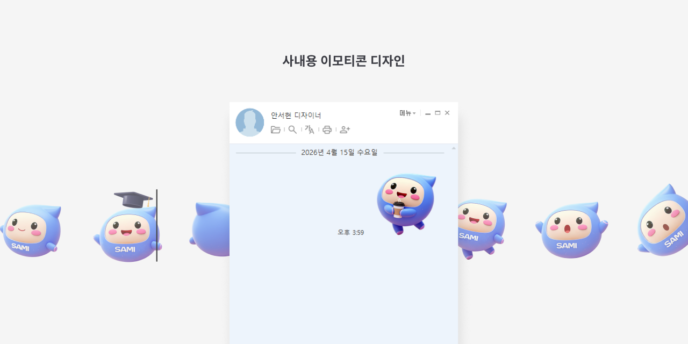

Feature Story
메신저 UI 브랜드 아이덴티티 정립
신규 메신저 시스템 도입에 맞춰 브랜드 컬러와 아이콘 시스템을 재정의하고, 일관된 시각 언어와 가이드를 구축하여 통합된 사용자 경험을 설계했다.

리뉴얼 전후 전체 화면 비교
Context
사내 메신저 리뉴얼 프로젝트로, 기존 UI에 회사 브랜드 아이덴티티를 반영하고 일관된 디자인 기준을 수립하는 것이 목표였다. 리뉴얼 디자인을 비롯해 아이콘 스타일 제안, 컬러 시스템 정리, 적용 가이드 제작 및 전달까지 전반적인 디자인 구조를 설계했다.


Problem
- 브랜드 컬러와 UI 요소 간 톤 불일치
- 솔리드와 라인 아이콘 혼재로 인한 스타일 불균형
- 아이콘 두께 및 형태 기준 부재
- 사용자 상태 표현의 시각적 구분 부족
- 버튼 및 UI 컴포넌트 구조 기준 부재

사내 전용 이모티콘 제작 및 적용
Strategy
- 브랜드 컬러를 기반으로 UI 컬러 시스템을 재정의하고, 상태별 컬러 역할을 명확히 구분함
- 아이콘 스타일을 라인/솔리드 기준으로 체계화하고, stroke 두께 및 형태 규칙을 정의함
- 사용자 상태에 따른 시각적 표현 기준을 수립함
- 버튼 및 UI 컴포넌트를 기능 단위로 재정리하고, 형태(radius) 및 구조 기준을 정의함

아이콘 스타일 재정립
Execution
- 리뉴얼 시안 제작 및 검토
- 아이콘 세트 톤·컬러 재정의 및 제안
- 필요한 이미지 요청 및 수급 완료
- 적용 가이드 문서화 및 전달, 에셋 정리
- 가이드에 따라 메신저 UI에 컬러·아이콘 일관 적용
- 사내 캐릭터 활용하여 사내에서 사용하는 이모티콘 제작

사내 전용 이모티콘 제작 및 적용
Result
브랜드 컬러와 아이콘 시스템이 일관되게 적용된 메신저 UI를 구축하고, 명확한 디자인 가이드와 에셋을 확보하여 사내 전반에 확장 가능한 상태로 리뉴얼을 완료했다. 이를 통해 시각적 통일성과 주요 기능의 인지성이 향상되었다.
insight
브랜드 정합성은 단순한 컬러 적용이 아닌, 아이콘과 컴포넌트까지 포함한
시각 시스템 전반의 규칙화에서 완성된다는 것을 확인했다.
기존 구조를 유지하면서 교체 가능한 방식으로 설계하여, 에셋 변경만으로도 빠르게 확장 및 유지보수가 가능한 구조를 구축했다.